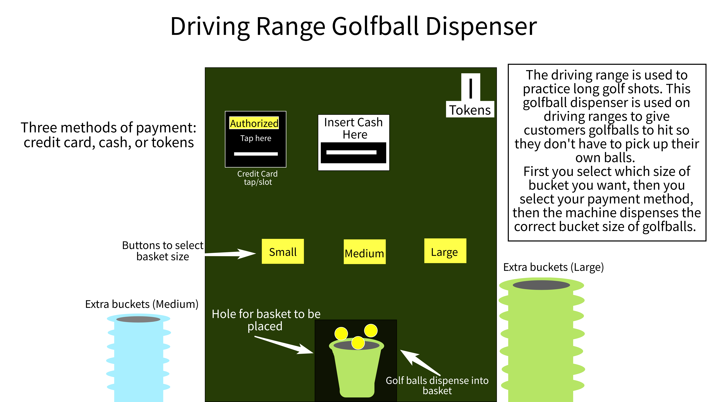
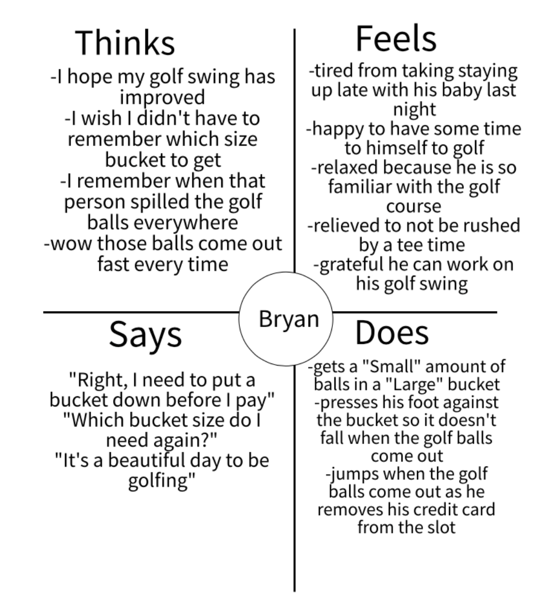
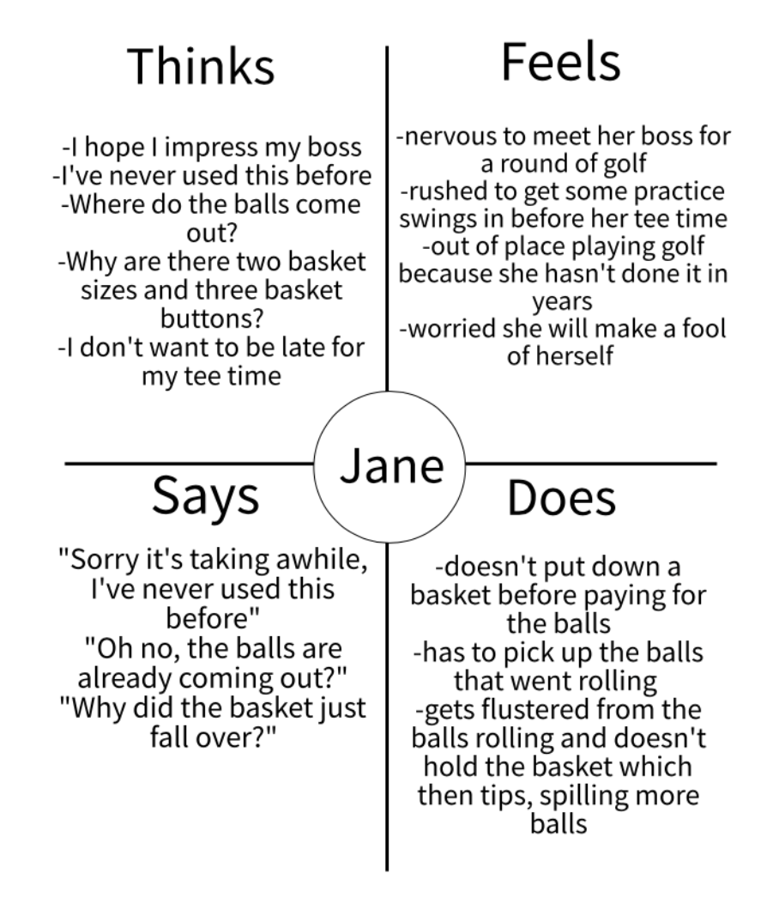
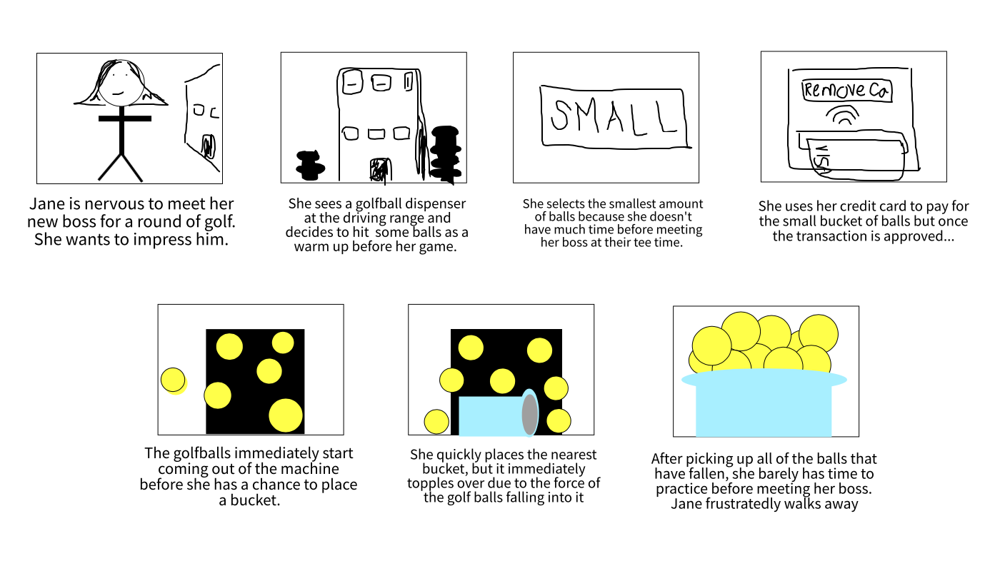

Observing and interviewing users is an important part of understanding how an interface can be improved. We can create fictional personas to embody a user and their issues in order to better empathize and understand how we can help. For this project, I went to my local golf course and observed users of the golfball dispenser for the driving range. First I observed, then interviewed, then created personas from what I learned, and lastly constructed a storyboard for one of the personas describing their experience.
Here is a sketch of the current golf ball dispenser setup:
Observing Users
Primarily middle-aged men using the machine. Most of them follow the pattern of selecting the size of the bucket, then paying with a credit card, then the balls immediately come out. Sometimes people were not prepared with a bucket under the machine, so some balls at the beginning did not make it into the bucket. Some users spent a couple minutes figuring out the machine while others spent only 20-30 seconds getting their golf balls. Some users switched out the bucket sizes before dispensing the balls, switching to a larger bucket.
Interviewing Questions
Compiled Answers
Personas
Based on the above observations and interviews, I created the following two personas to personify issues the users experienced through how they think, feel, say and do:
Persona 1: Bryan
Bryan is a laid back, middle-aged father who feels burnt out at work and uses golf as an escape. He struggles with remembering which bucket size to use and the amount of focus needed to place the bucket at the right time and hold the bucket still during dispensing. Bryan represents the users of my interface as an example of someone who is at the driving range for a leisurely time, he isn’t in a rush and has used this specific machine before. He represents the users who are familiar with the necessary steps to use the machine effectively, but still wishes the process could be further simplified.
Persona 2: Jane
Jane is an overachiever who likes to be in control who has just started a new job. She struggles with the lack of instructions on the interface and therefore does not put a bucket down before the balls dispense and is not aware that the bucket must be supported so it does not tip. She is easily frustrated with interfaces she is not familiar with and is especially irritable when she is in a rush and wants to impress her new boss. Jane represents a new user of this golf ball dispenser and the issues that new users seem to face according to my interviews and observations. She is a frustrated new user who is under a time constraint because she has a tee time to play a round of golf and leaves the experience displeased with the interface.
Storyboard
I selected Jane for my storyboard because she was a new user who was unfamiliar with the machine which exemplified one of the more incident-prone situations for the gold ball dispenser. Below is a short storyboard illustrating her experience:
